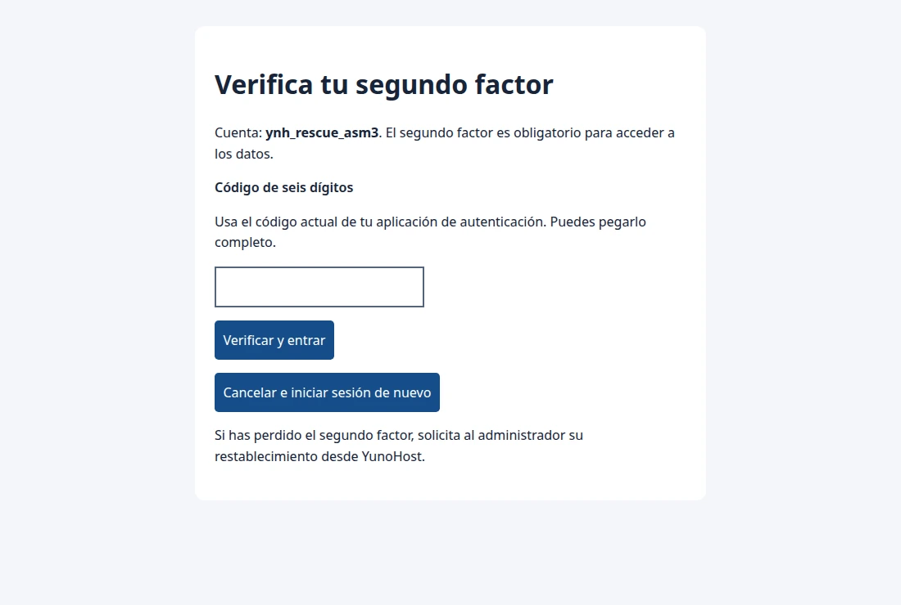
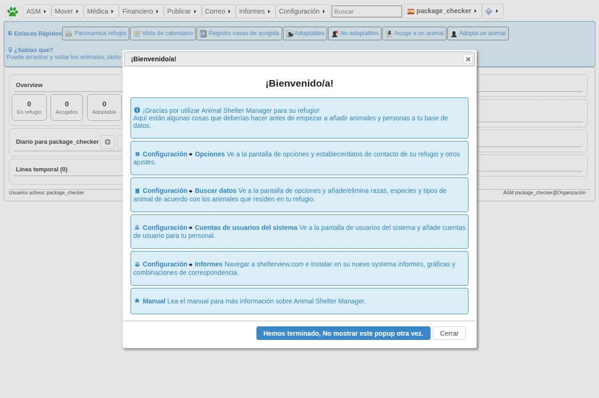
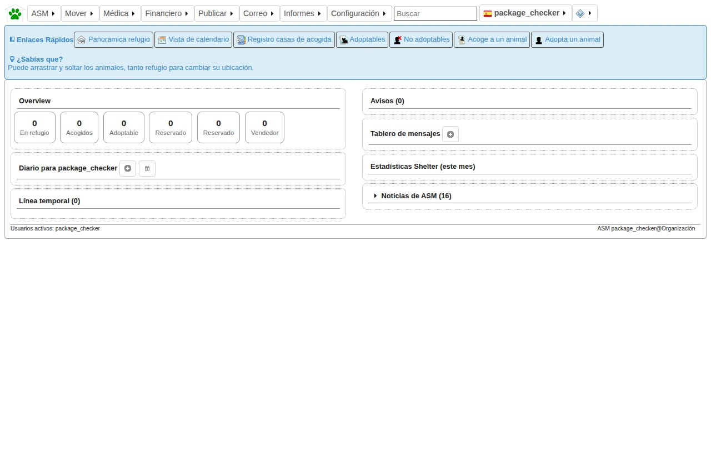

Guía para protectoras y administración
Animal Shelter Manager en YunoHost
Instala ASM3, organiza el acceso del equipo y protege los datos de animales, adopciones y acogidas.
- YunoHost ≥ 12.1.17
- 512 MiB de RAM disponible
- 2 GiB más documentos
01 / Preparación
Instalación
- Prepara un dominio con HTTPS válido y crea la cuenta de YunoHost que administrará ASM3.
- En el panel de YunoHost abre Aplicaciones → Instalar una aplicación personalizada. Introduce la URL del repositorio si YunoHost puede clonarlo.
- Elige dominio, ruta, grupo inicial, administrador e idioma. Por ejemplo, para usar
https://refugio.example.org/asm3/, seleccionarefugio.example.orgy/asm3. - Abre el mosaico de ASM3 en el portal de usuarios. Empieza con un grupo privado si solo va a entrar el equipo.
Clona el repositorio en el servidor con tus credenciales de Git e instala desde la ruta de la copia. El ejemplo supone que ya existe /ruta/absoluta/asm3_ynh.
sudo yunohost app install /ruta/absoluta/asm3_ynh02 / Identidad
Primer acceso y segundo factor
Entra desde YunoHost. ASM3 vincula la cuenta mediante LDAP, crea su perfil y conserva los roles de aplicación. La cuenta elegida durante la instalación tiene acceso completo. El resto del personal empieza con permiso de lectura de animales.
- Abre el mosaico de ASM3 desde el portal de usuarios.
- Escanea el QR con una aplicación TOTP y confirma el código de seis cifras.
- Desde ASM3 asigna solo los roles que necesita cada persona. Limita el permiso
staffen YunoHost al grupo correspondiente.

Dex, OpenID Connect y recuperación
Para usar Google, GitHub o Microsoft, instala Dex en YunoHost. En el panel de configuración de ASM3 selecciona Dex, registra los clientes usando el callback indicado y define los usuarios autorizados. Las listas vacías deniegan el acceso externo. El SSO nativo sigue disponible.
Un proveedor OIDC propio requiere un cliente registrado y el algoritmo de firma que corresponda, RS256 o RS512. El código TOTP se sigue pidiendo en ASM3. Consulta las guías de Dex y OIDC.
Si alguien pierde su factor, el administrador de YunoHost puede restablecerlo desde la configuración de ASM3. La operación revoca las sesiones. La recuperación local en /login?local=1 también requiere TOTP.
03 / Operación
Trabajo diario

- Configura los datos de la organización, la zona horaria y el remitente.
- Da de alta una persona de contacto y registra la entrada del animal. Añade ficha veterinaria, ubicación y documentos según corresponda.
- Para una acogida o adopción, registra el movimiento en ASM3. Revisa qué datos se mostrarán si publicas una ficha.
- Usa los informes de ASM3 para revisar pendientes e inventario. Prueba primero con datos ficticios.

El manual oficial detalla los módulos y el significado de cada campo. Manual de Shelter Manager.
04 / Visibilidad
Adopciones y formularios públicos
Si el refugio necesita exponer servicios públicos, permite visitantes en el permiso main de YunoHost y configura en ASM3 qué servicios se ofrecen. Mantén staff limitado a tu equipo. Prueba el formulario y la ficha en una ventana privada y comprueba que el panel de trabajo sigue solicitando identificación.
05 / Monitorización opcional
Home Assistant
Si la instancia ya admite visitantes, un sensor REST puede comprobar la respuesta del backend a través del proxy de YunoHost. El ejemplo no usa cuentas ni lee fichas de animales. Para una instancia privada, conserva sus permisos y usa un monitor de red como Ping para comprobar el servidor.
- Descarga el ejemplo YAML y sustituye el dominio y la ruta.
- Añádelo a
configuration.yaml. Si ya existebinary_sensor:, añade solo el elemento a la lista. - Valida la configuración, reinicia Home Assistant y localiza la entidad «ASM3 responde».
onindica que el backend respondióready. Puedes alertar si el sensor pasa aoffounavailabledurante cinco minutos. El sondeo no comprueba la base de datos.
Consulta las opciones del sensor y cómo interpretar sus estados. Documentación oficial del sensor REST.
06 / Ciclo de vida
Copias, actualizaciones y cambio de URL
Usa las copias de YunoHost para guardar configuración, registros, documentos e imágenes. Los archivos permanentes se guardan en MariaDB. Conserva una copia fuera del servidor y prueba su restauración en un servidor de pruebas antes de depender de ella.
sudo yunohost backup create --apps asm3
sudo yunohost app upgrade asm3 -u /ruta/absoluta/asm3_ynhSi cambias el dominio o la ruta desde YunoHost, comprueba HTTPS, el acceso del personal, formularios y monitorización. Si usas un proveedor OIDC externo, revisa las URLs de retorno registradas. Para una segunda instalación, sustituye asm3 por el ID que asignó YunoHost.
07 / Incidencias
Diagnóstico rápido
- Vuelve continuamente al portal de YunoHost
- Comprueba el dominio, la ruta y el permiso del usuario en
mainystaff. - El autenticador genera códigos que no funcionan
- Comprueba la hora del dispositivo y del servidor. Si se perdió el factor, restablécelo desde el panel.
- La aplicación devuelve 502
- Revisa el estado del servicio y los errores de Nginx. El registro puede contener información privada. Comparte solo fragmentos revisados.
- El sensor REST devuelve apagado o no disponible
- Comprueba HTTPS, la URL de salud y si YunoHost devuelve su propia pantalla de acceso.
sudo systemctl status asm3
sudo journalctl -u asm3 -n 60 --no-pager08 / Código
Desarrollo y validación
AGENTS.md y CONTRIBUTING.md explican cómo encontrar el código, actualizar el origen y ejecutar pruebas. docs/ contiene este manual; doc/ contiene los textos que consume YunoHost y la documentación técnica.
51.1~ynh7 completó los siete escenarios de package_check en Debian 12 y YunoHost 12.1.41.2. El resultado oficial global fue nivel 0 por los hallazgos relativos al catálogo comunitario. Consulta el informe original.